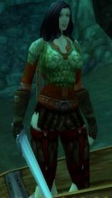

Aldherianne
Age : 19
Sexe : Femme
Race : Humain
Faction : Alliance
Formation : Guerrier
Description : "On avait tous une vie avant, une histoire plus ou moins paisible et plus ou moins heureuse ... avant ..."
Je m'appelle Aldherianne ... Aldherianne Fairgiver. Je suis originaire de Moulin de Tarren dans les contreforts d'hillsbrad mais ça n'a plus vraiment d'importance maintenant que tout a changé...
Mon pere était un fiere guerrier du nom de Harkhennor, je n'ai plus vraiment de souvenir de lui mais je me souviens encore de ces talents incontesté de forgeron... Je passais des heures a le voir travailler le fer... Mais bon c'était avant...
Je ne vous raconterai pas l'histoire ou plutot le cauchemard que j'ai vécu car vous aussi vous l'avez vécu a votre manière. Le fléau ne nous concernait pas, il était loin, pour moi ou plutot pour nous tous ce n'était qu'une rhumeur, une histoire pour faire peur aux enfants. Et puis tout a changé, le fléau on en parlait a la taverne, on le lisait dans le journal puis c'est les sentinelles autour du village qui en parlaient et enfin on le voyait rentrer par les portes et les fenetres...
Apres je ne sais plus ...
La suite n'a qu'un mot pour la décrire... "Seule"
J'ai passé 4 ans cloitré a Nortshire ou j'ai pas ou peu parler et maintenant que je suis majeure je veu savoir ce qui sait passé a Moulin de tarren... Je n'ai aucune compétence ni aucun talent. Je sais me battre et je veu me battre...
Je n'ai plus rien ...
"Ne croisé jamais quelqu'un qui n'a plus rien a perdre"
Plus d'infos sur Aldherianne >>>Lire les 4 récits de Aldherianne >>>